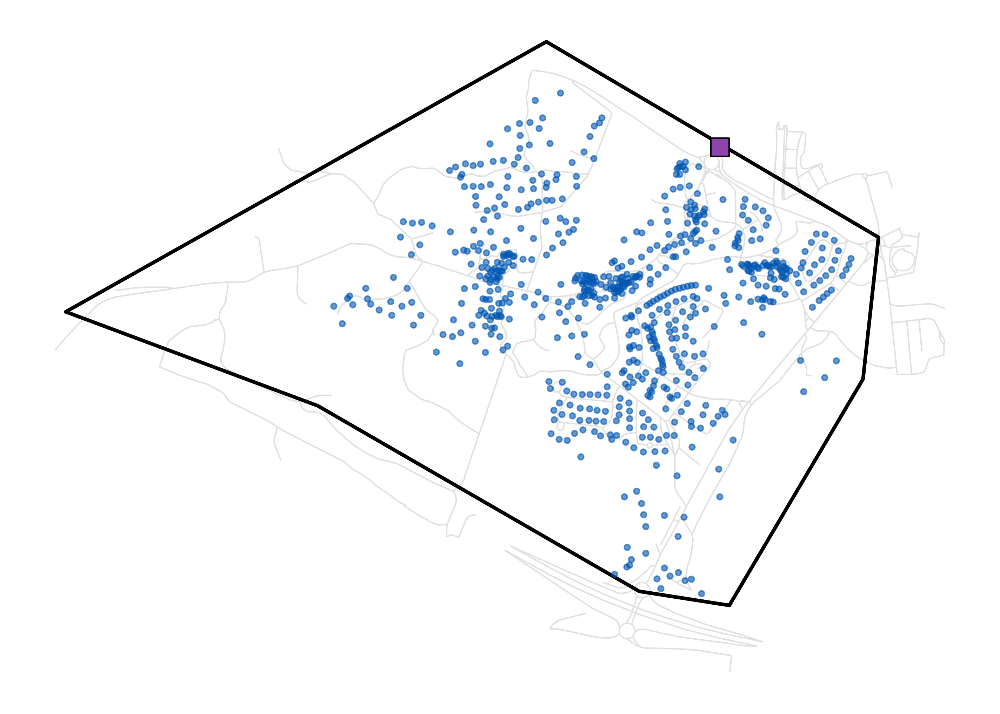
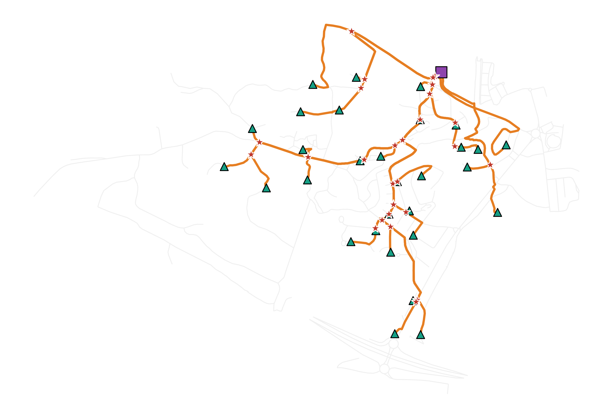
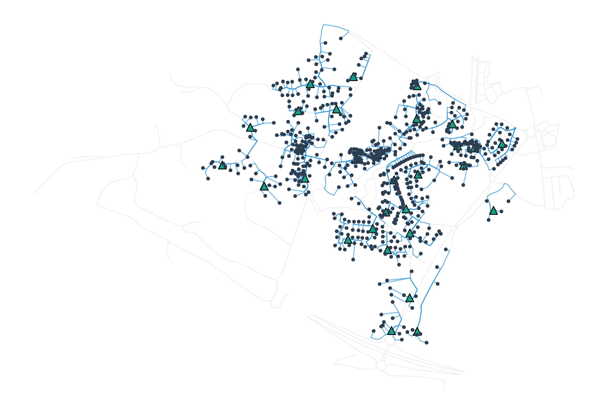
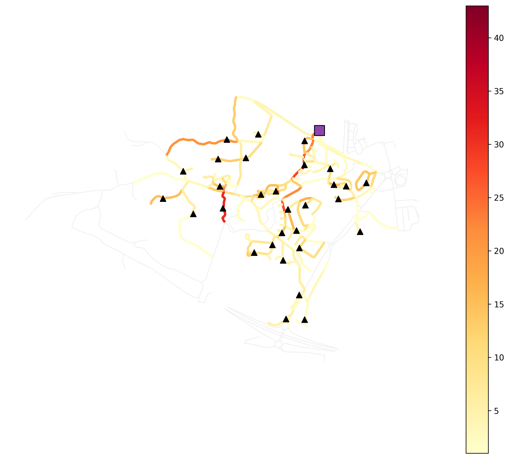

Análisis técnico y viabilidad económica de red de acceso de nueva generación.
| Elemento de Red | Métrica |
|---|---|
| Longitud Fibra Troncal (Alimentación) | 23262.42 m |
| Longitud Fibra Acceso (Dispersión) | 61396.25 m |
| Cajas de Empalme / Torpedos | 27 ud |
| Distancia Media al Hogar (OLT -> Portal) | 878.31 m |
| Distancia Máxima de Atenuación (Peor Caso) | 1833.68 m |
| Distancia Mínima (Mejor Caso) | 154.25 m |
| Concepto | Cantidad | Precio Unit. | Subtotal |
|---|---|---|---|
| Cableado de Fibra Óptica | 85541.3 m | 1.2 € | 102,649.56 € |
| Cajas Terminales Ópticas (CTO) | 31 ud | 150 € | 4,650.0 € |
| Cajas de Empalme de Mazo | 27 ud | 85 € | 2,295.0 € |
| Kits de Conectorización y Roseta | 1324 ud | 15 € | 19,860.0 € |
| TOTAL INVERSIÓN MATERIAL (SIN IVA) | 129,454.56 € | ||



